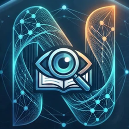
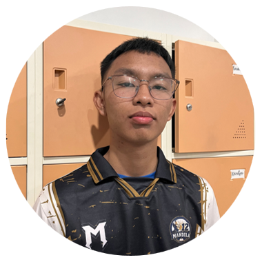
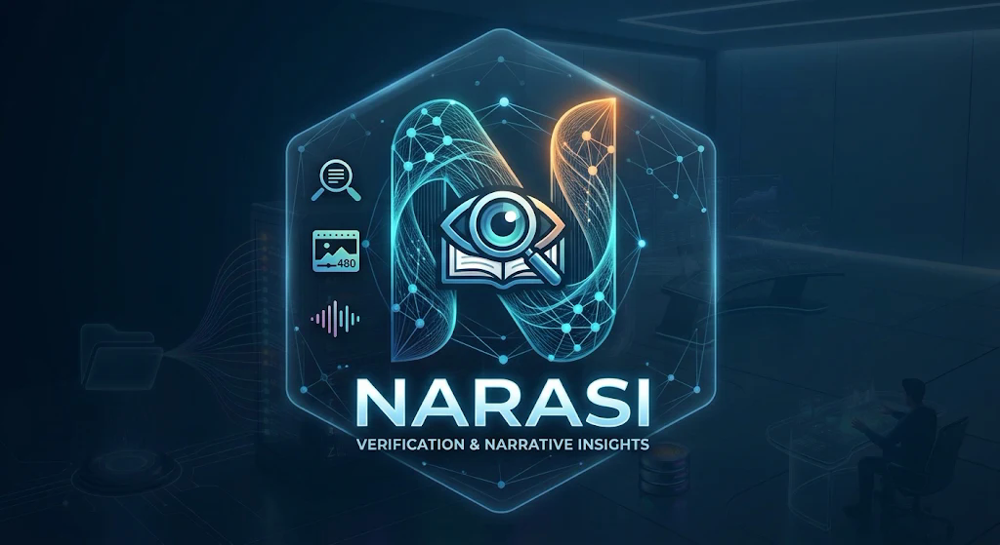

NARASI
Full Stack Engineer
Label hoaks langsung di atas caption video
Klaim, teks layar, suara, dan pencarian bukti
Peringatan dini untuk Penerangan TNI AD
Caption terlihat aman, klaimnya ada di teks layar dan suara. Alat cek fakta biasa cuma baca teks.
Hampir tidak ada yang berhenti scroll, buka Google, lalu cari situs cek fakta.
Baru sadar setelah video viral, padahal momen emasnya di jam-jam pertama.

Untuk siapa saja yang menonton. Label berbasis bukti langsung di atas caption.
Video yang perlu segera ditangani, lengkap dengan peringatan dini dan rekomendasi aksi.
| Situs cek fakta | Moderasi platform | NARASI | |
|---|---|---|---|
| Di mana | Pindah tab, cari sendiri | Tidak terlihat | Langsung di atas caption |
| Yang dibaca | Teks | Tergantung platform | Caption + teks layar + suara |
| Dasar label | Artikel per kasus | Kebijakan internal | Bukti bersitasi, bisa dicek |
| Kecepatan | Jam sampai hari | Tidak menentu | ±0,1 dtk label awal |
| Untuk TNI AD | — | — | Peringatan dini + rekomendasi aksi |
Label di atas caption. Tanpa pindah tab.
Caption, teks layar, dan suara.
AI tidak memvonis sendiri. Aman dari tuduhan sensor.
"Baksos TNI di Aceh" ≠ "TNI serang Aceh". Masuk tes otomatis.
Label untuk penonton + peringatan dini untuk Penerangan.
prajurit serentak dalam uji beban
galat
label pertama dikirim server (p50)
hemat pemakaian AI
Frame diproses lalu dibuang
Tanpa login, tanpa data profil
Hanya untuk menghitung lonjakan
Identitas pelapor tidak terkirim
Tameng kognitif langsung di layar. Tidak ikut menyebarkan hoaks yang mencatut institusinya sendiri.
Peringatan dini, bukti siap pakai, dan rekomendasi aksi sebelum viral.
Data agregat narasi untuk analisis operasi informasi. Bisa diperluas ke matra lain, Puspen TNI, Komdigi.
Force-install lewat Chrome/Edge Enterprise ke semua perangkat satuan.
Satu docker-compose, cukup 2 vCPU & 2 GB RAM, bisa on-premise.
Platform ganti tampilan? Cukup perbaiki satu adapter.